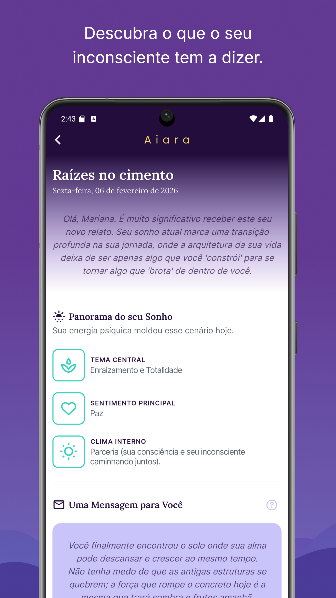
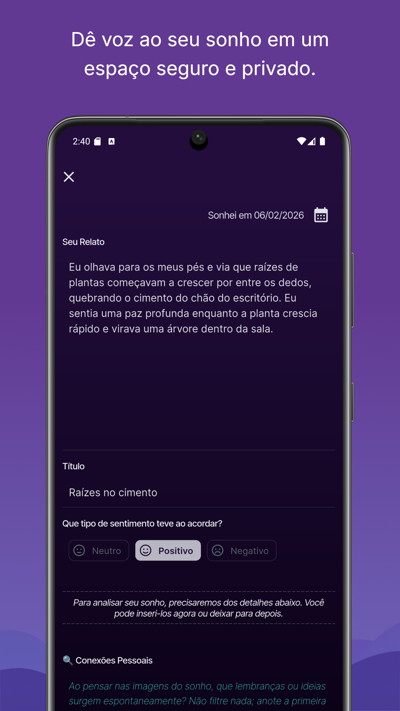
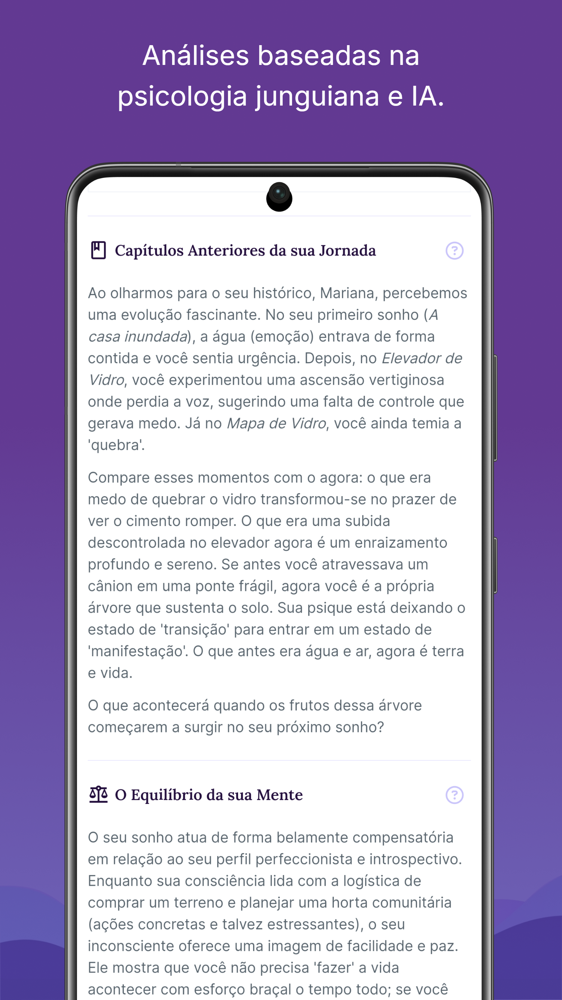
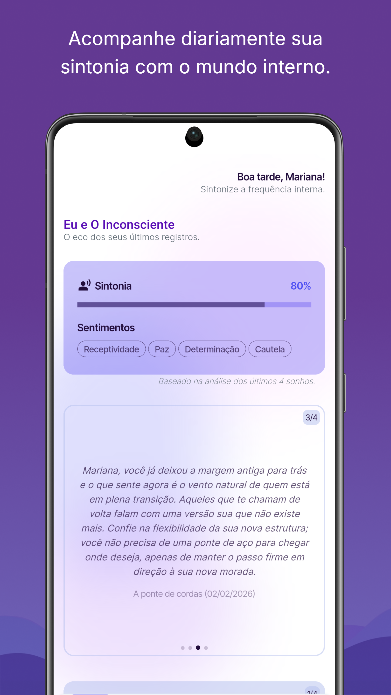
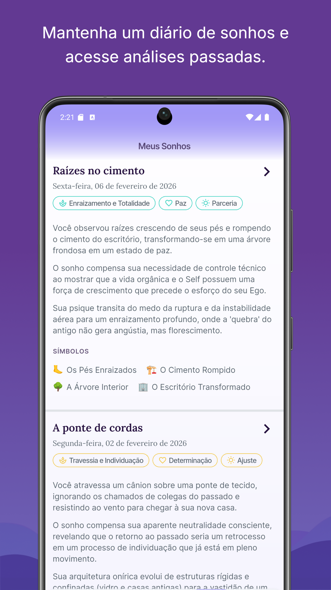

Você pode estar ignorando parte de quem você é... e seus sonhos sabem disso.
Como um espelho da sua mente profunda, seu sonho pode trazer clareza para dificuldades que esteja vivendo hoje e beneficiar sua saúde mental.
O Aiara é uma ferramenta de autoconhecimento que ajuda você a registrar, acompanhar e compreender seus sonhos ao longo do tempo com base na psicologia junguiana.




Seu sonho não quer ser interpretado. Ele quer ser acompanhado ao longo do tempo.
A maioria das pessoas tenta entender sonhos como eventos isolados. Um sonho estranho aparece, ela tenta encontrar um significado… e no dia seguinte, esquece.
Ou procura respostas genéricas na Internet:
“O que significa sonhar com cobra?”
Mas, na prática clínica, isso quase nunca funciona. Porque o sonho não é uma mensagem pronta. Ele faz parte de um processo.
Na psicologia junguiana, o sentido de um sonho depende de quem você é, do momento que está vivendo e da relação com outros sonhos.
Um sonho sozinho diz pouco.
Mas quando você começa a registrar e observar ao longo do tempo… padrões começam a surgir.
E o que antes parecia sem sentido
começa a formar uma bela narrativa sobre partes suas que você desconhecia.
Sem um registro contínuo e organizado, essa conexão se perde...
Os sonhos vêm…
e vão embora.
E com eles, uma parte importante da sua experiência também se dissolve.
Foi por isso que o Aiara foi criado
Não para interpretar sonhos de forma genérica,
mas para ajudar você a acompanhar esse processo ao longo do tempo.
Afinal, você não quer apenas entender sonhos.
Você quer uma ferramenta prática para entender a si mesma ou si mesmo e viver de forma mais completa.
Contexto pessoal
O Aiara entende seu perfil, contexto, sonhos anteriores e o que é importante no seu momento de vida.
Diário de sonhos
Registre seus sonhos facilmente e acompanhe sua evolução ao longo do tempo através de análises profundas.
IA treinada com rigor
Baseada na teoria de Carl Gustav Jung. Uma das ciências psicológicas mais amplas para a integração do inconsciente.


O que muda quando você começa a acompanhar seus sonhos
1. Você começa a perceber padrões que antes passavam despercebidos.
2. Seus sonhos deixam de ser fragmentos isolados e começam a formar uma narrativa de sentido para sua vida.
3. Você se conecta com aspectos ignorados da sua própria personalidade.
4. Ganha mais clareza sobre conflitos internos e potenciais adormecidos.
5. Desenvolve uma relação mais autêntica com o seu mundo interior.
Um apoio ao seu processo — não um substituto
O Aiara não substitui a psicoterapia.
Ele funciona como uma ferramenta de apoio ao autoconhecimento, ajudando você a manter contato contínuo e mais íntimo com seu mundo interior.
Pode, inclusive, complementar sua terapia, servindo como material de reflexão para suas sessões com um profissional da psicologia.

Criado com base clínica e rigor técnico
Desenvolvido por um profissional que integra a experiência de ex-engenheiro do Google à escuta clínica como psicólogo junguiano.
Profundidade, responsabilidade e privacidade.
Seus sonhos pertencem apenas a você
Por isso, o Aiara foi construído com foco total em privacidade.
Seus dados são criptografados e não são acessados por terceiros.
Comece a acompanhar seus sonhos
Experimente gratuitamente e observe o que começa a surgir quando você mantém contato contínuo com sua vida interior.
Perguntas frequentes
1. O app substitui terapia?
Não. Ele é uma ferramenta de apoio ao autoconhecimento.
2. Preciso entender de psicologia?
Não. O app foi feito para qualquer pessoa interessada em compreender melhor seus sonhos e a si mesma.
3. E se eu não lembrar dos sonhos?
A memória onírica pode ser desenvolvida, o simples ato de dar atenção e pensar sobre o assunto já fortalece essa capacidade.
Seus sonhos não acontecem por acaso.
Eles são uma importante forma de expressão da vida que poucos observam.
Quanto mais você observa, mais começa a perceber conexões e ganhar clareza sobre sua vida.
E, aos poucos, algo que antes parecia confuso começa a fazer sentido.
Comece a acompanhar.